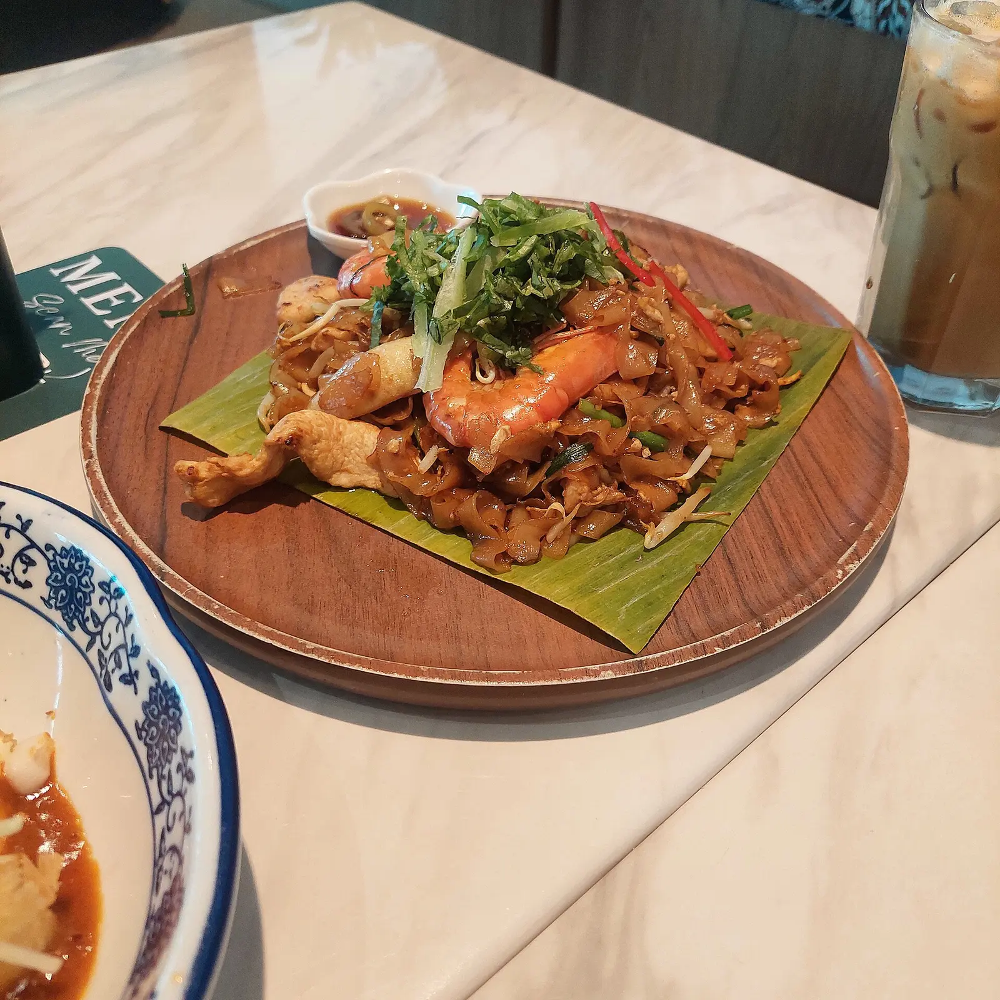
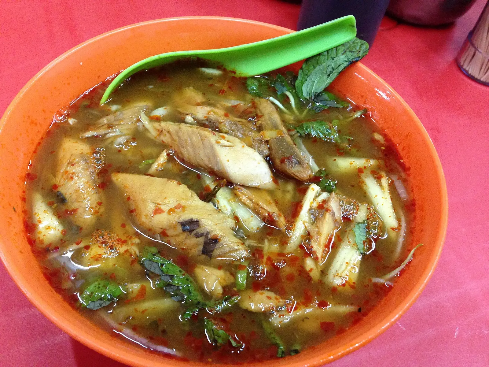
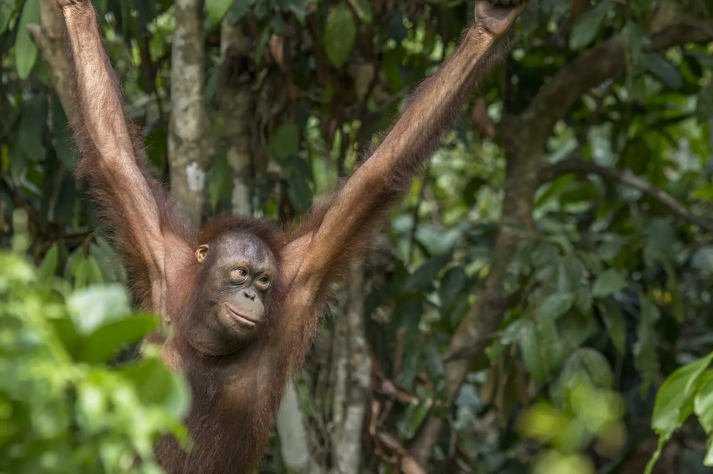
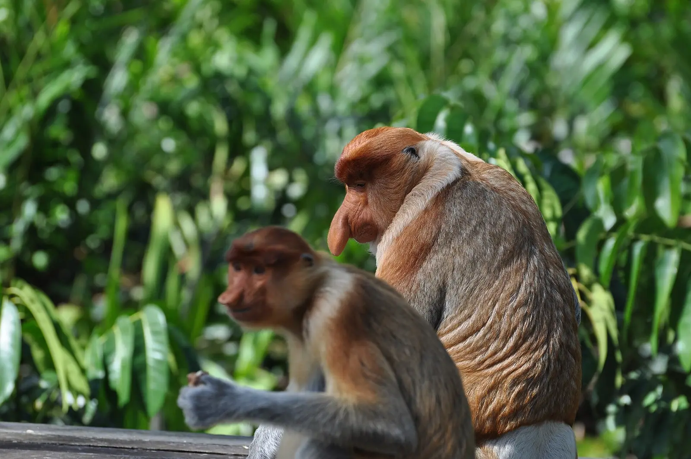
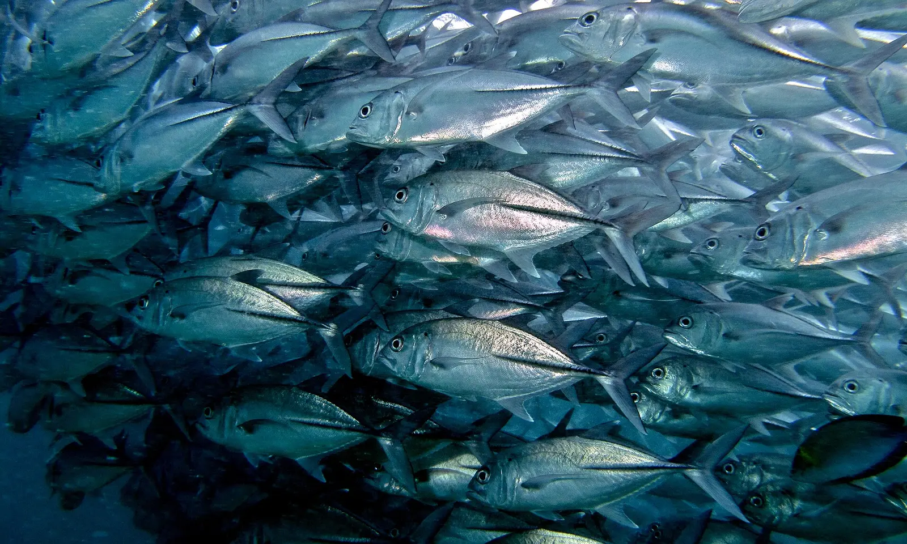
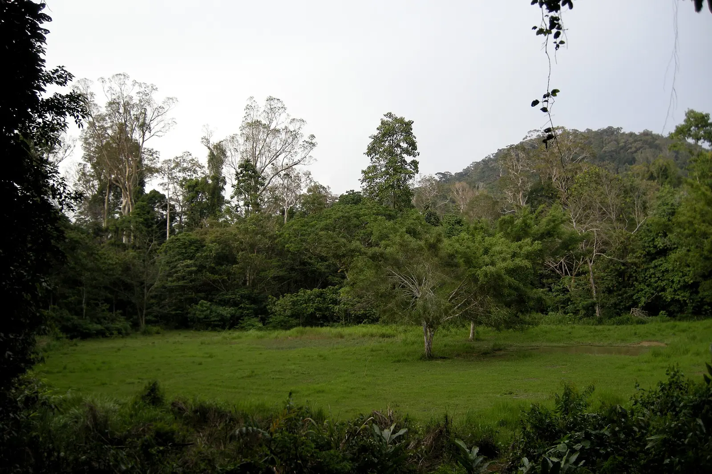
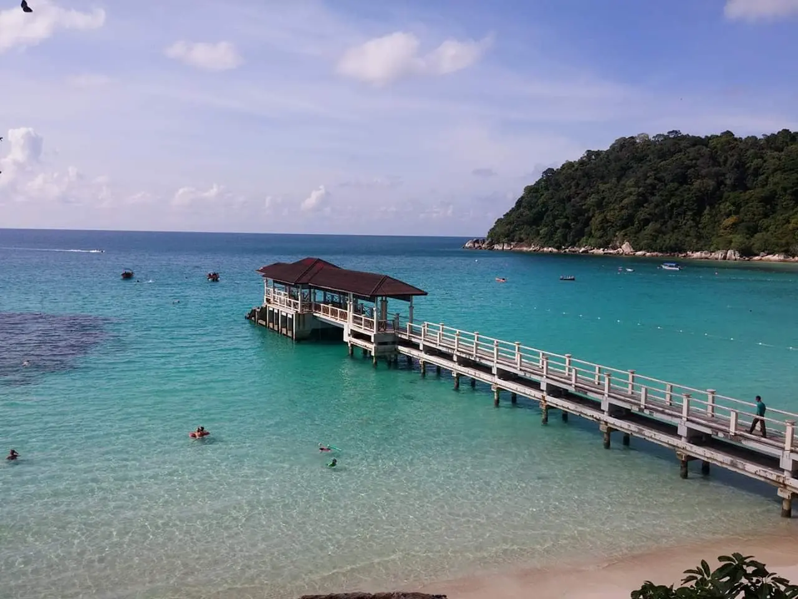
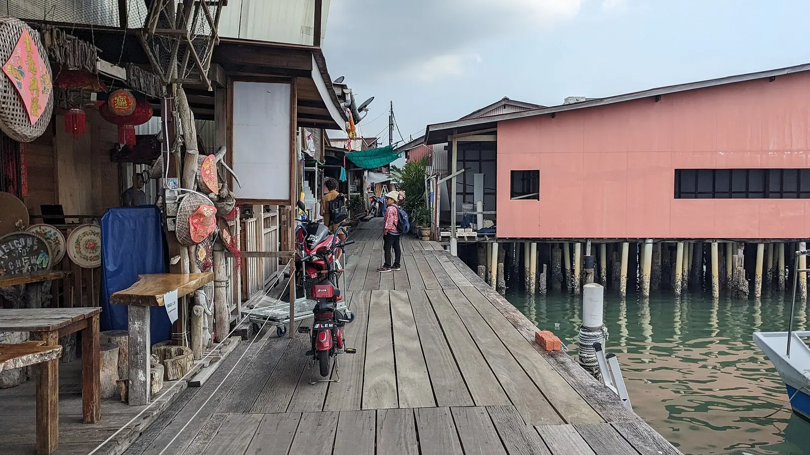
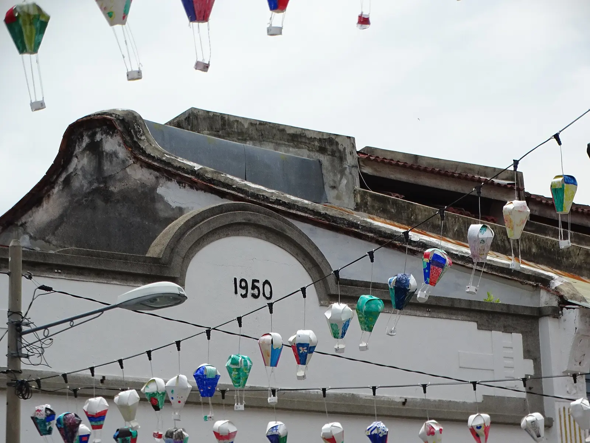
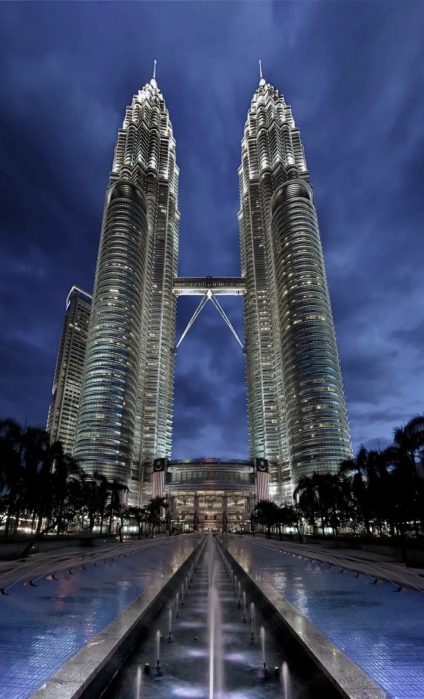

One country that hands you the continent's best street food, wild great apes, the planet's oldest rainforest and two living UNESCO cities — and makes all of it effortless.
It is the single easiest, most rewarding way into Southeast Asia.
The continent's best-rated street food[1], wild great apes you watch from a riverboat[8], the planet's oldest rainforest[14], two living UNESCO heritage cities[18] and turquoise reef islands[15] — all in the most English-fluent country in Asia[21], visa-free for 90 days[22], on a strong euro[23]. Thailand is more trampled, Vietnam cheaper but single-culture, Singapore sterile-and-pricey; Malaysia is the one that does everything at once[26].
Ruthlessly — the five reasons.
Malay, Chinese, Indian and Peranakan kitchens layered onto one hawker bench. Penang / George Town was crowned Asia's best street-food city — ahead of Bangkok, Singapore, Hanoi and Chiang Mai[1]; CNN calls it the continent's greatest[2]. The named legends do the persuading:
Thailand and Vietnam each do one national cuisine brilliantly. Malaysia stacks three on the same bench — every day.

Assam laksa · Air Itam
Bornean orangutan · Sepilok
Proboscis monkey
The silver tornado · SipadanThe headline no neighbour can match. Borneo, with Sumatra, is the only place on Earth with wild orangutans — watch them swing in to feed at Sepilok in Sabah[8] or at Semenggoh near Kuching — RM10, near-guaranteed[9].
A dawn cruise on the Kinabatangan stacks the odds for pygmy elephants, hornbills and the bulbous-nosed proboscis monkey[10], as does a day at Bako[11]. Below the water, Sipadan rates among the world's very best dive sites[12] — 3,000+ fish species and a barracuda vortex at Barracuda Point[13].
Bali has surf and Komodo. Only Malaysian Borneo bundles wild great apes, river safari and a top-five reef into one accessible state.
Taman Negara is a ~130-million-year-old rainforest — older than the Amazon — crossed by longboat, not road[14].
The Perhentian Islands are car-free jungle islands ringed by turquoise water, with blacktip reef sharks and green turtles you snorkel straight from the beach[15][16].
Mount Kinabalu, Malaysia's natural UNESCO site, looms over Sabah — summit optional, foothills enough[17].
Peninsular Malaysia and Borneo are effectively two trips — under one currency and one visa.

Taman Negara · 130 million years old
Perhentian Islands · car-free
Chew Jetty · George Town
Heritage shophouses
Petronas Towers · KLGeorge Town and Malacca were jointly inscribed in 2008 for 500 years of East–West trade still alive in their shophouses, clan houses and temples[18] — lived-in heritage, not a museum[19].
The modern counterpoint: KL's Petronas Twin Towers skyline, an easy timed-entry icon to bookend the heritage[20].
Five centuries of trade you can still walk through — then a skybridge over the modern city the same afternoon.
For a first Southeast-Asia outing, nothing fights you. English everywhere, no visa to queue for, a euro that stretches, and modern cities and Borneo wilderness on a single domestic-flight hop.
You spend your attention on the food and the orangutans — not on logistics.
Each does one thing brilliantly. Malaysia is the one that does all of them — for a first-timer.
The per-base detail — what to eat, where to sleep, which boat — lives in the place guides this pitch opens.
This is the pitch. The rest of the expedition turns it into a routed 2–3 week trip.